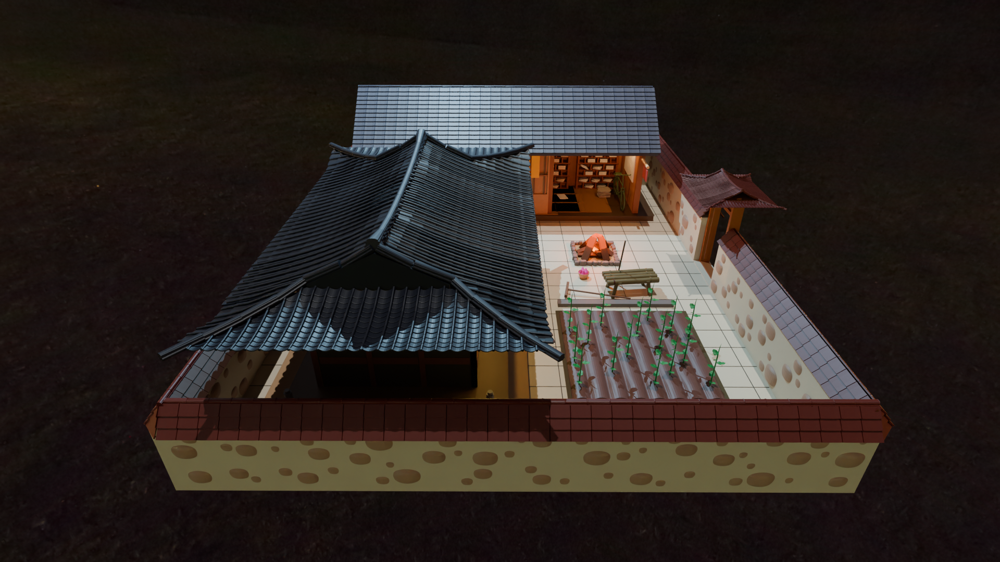
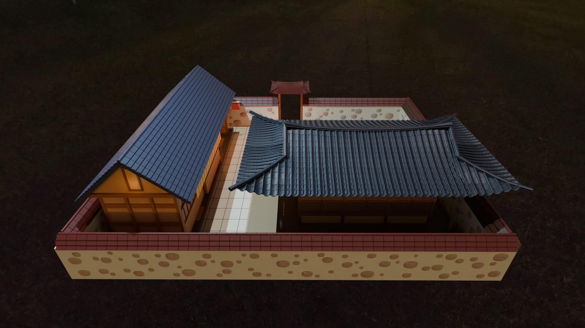
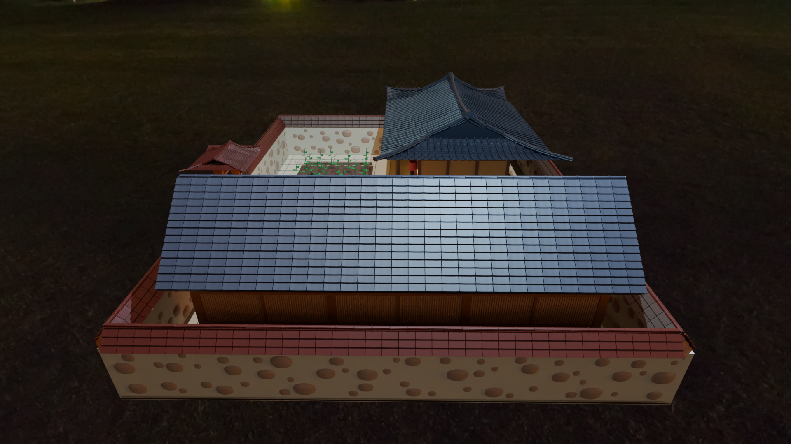
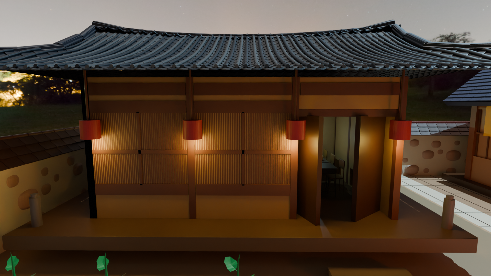
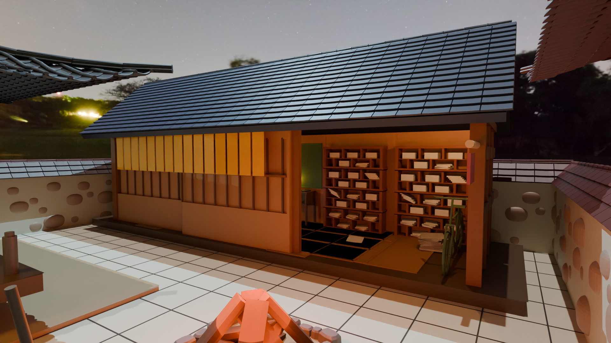
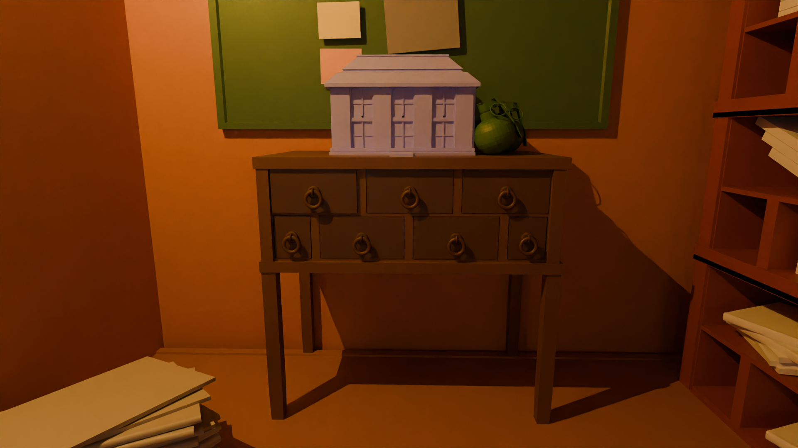
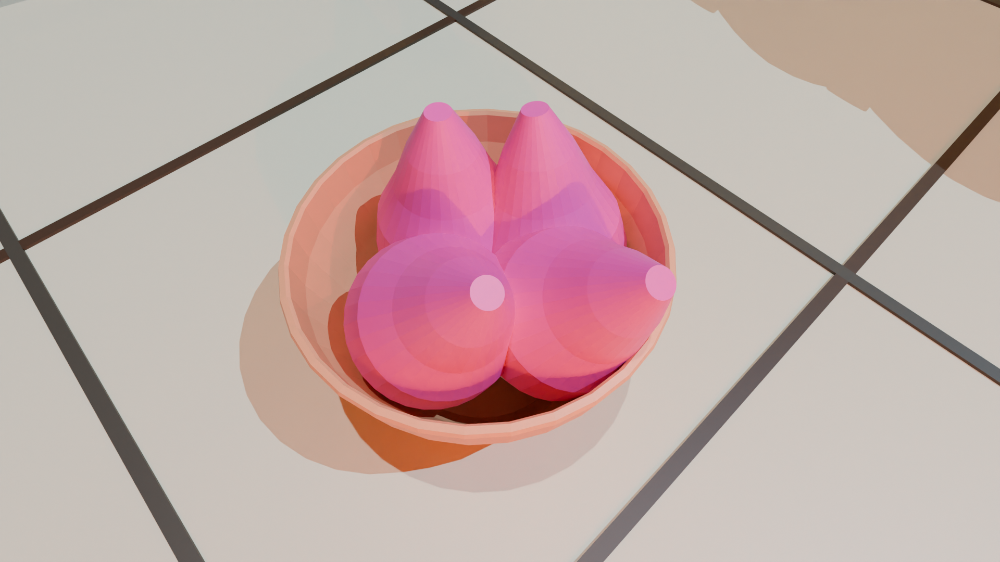
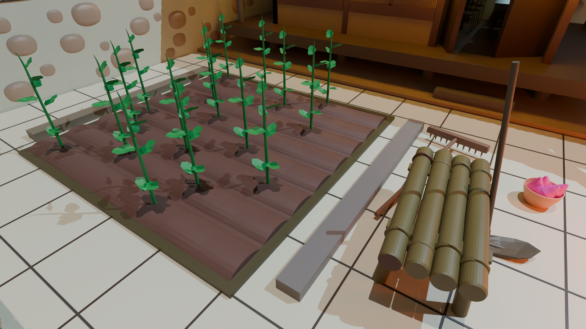

오리지널 뷰images/overview-original.png

왼쪽 뷰images/overview-left.png

뒤 뷰images/overview-behind.png

오른쪽 뷰images/overview-right.png













The House of Memory (THOM) is an interactive 3D museum built to preserve and share the life and legacy of Bang Hanmin — independence activist, journalist, and educator — through the spaces he inhabited.
The house is a digital reconstruction of his traditional Korean home (한옥) in Nonsan, South Chungcheong Province, modeled in Blender from historical references and family memory. Each room is a portal: the gate, the courtyard, the study, and the main hall each hold artifacts, stories, and moments from his life under Japanese colonial rule and beyond.
THOM was created by his descendants as a living archive — a way to walk through history rather than simply read it.
Bang Hanmin was born on January 6, 1900, in Eunjin County, South Chungcheong Province (present-day Nonsan), the second son of Bang Gyu-seok and Cho Hyun-jung. He studied at Gongju Agricultural School and Suwon Agricultural College before traveling to Tokyo in 1919, where the March 1st independence uprisings ignited a lifelong commitment to Korea's liberation.
Returning to Korea, he joined the newly founded Chosun Ilbo in 1920 as a reporter and editor, using the press as a weapon against colonial rule. He went back to Tokyo in 1922 and co-founded the Munhwa Sinmun newspaper, organizing Korean student protests against Japanese atrocities. In 1923, working alongside fellow activists in Manchuria, he co-established the Dongyang Academy to educate Koreans abroad — but was arrested the same year for an alleged plot to assassinate Japanese colonial officials and bomb key installations. He was sentenced to ten years in prison.
Released on parole in 1928, he was arrested again in 1929 for involvement in the independence movement and sentenced to seven more years, finally leaving Daejeon Prison in 1937. After liberation in 1945, he taught at Suwon Agricultural College and participated in the Second National Assembly elections. He was posthumously awarded the Order of Merit for National Founding — Patriotic Service Medal (건국훈장 애국장) in 1990.